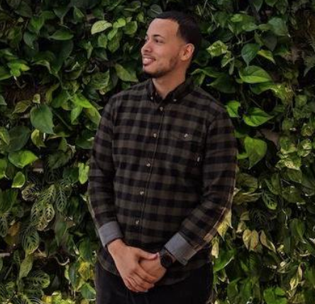

About Me

Hello World. My name is Gerardo Laracuente, but everyone calls me Gerry. I've had an interest in technology my whole life. When I was a kid, I used to open up electronics and try to figure out how they worked. That curiosity is still alive in me today. I love to understand how things work, and it's a big part of my current job.
I'm a Data Center Engineer at Outbrain, Inc. The job title doesn't really describe what I actually do. I'm more of a Server Engineer, that uses DevOps principles to try to automate all the tasks I'm responsible for. I get to play around with a lot of great tools (mostly open source) such as Chef, Jenkins, Prometheus, Grafana, and Ruby/Bash scripting.
I'm currently learning Full Stack Web Development so I can be a better engineer. Maybe I'll end up building my own app one day.